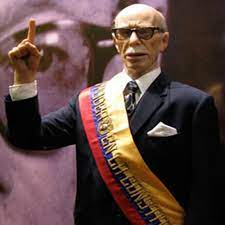

José María Velasco Ibarra (1893-1979)
José María Velasco Ibarra fue un político ecuatoriano que ocupó la
presidencia en cinco ocasiones no consecutivas. Nació el 19 de marzo de 1893 en
Quito, Ecuador. Su primer mandato presidencial fue en 1934. A lo largo de su
carrera política, Velasco Ibarra fue conocido por su retórica populista y su
promesa de estabilidad política y prosperidad económica. Sin embargo, su
presidencia estuvo marcada por inestabilidades políticas y golpes de Estado.
A pesar de sus altibajos políticos, es recordado como una figura influyente en
la historia moderna de Ecuado